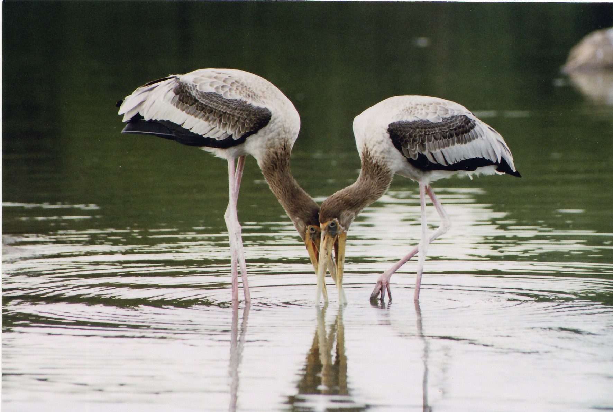
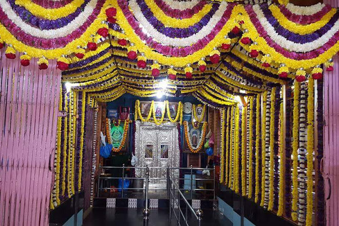

TourKarnataka.com
TOURIST PLACES IN SHIVAMOGA
JOG FALLS
 Jog Falls is waterfall on the Sharavati river located in the Western Ghats in Sagara taluk, Shimoga district. It is the second highest plunge waterfall in India. It is a segmented waterfall which depends on rain and season becomes a plunge waterfall. The falls are major attractions for tourists and is ranked 13th in the world by the waterfall database
Jog Falls is waterfall on the Sharavati river located in the Western Ghats in Sagara taluk, Shimoga district. It is the second highest plunge waterfall in India. It is a segmented waterfall which depends on rain and season becomes a plunge waterfall. The falls are major attractions for tourists and is ranked 13th in the world by the waterfall database
Jog Falls is created by the Sharavati dropping 253 m , making it the third-highest waterfall in India after the Nohkalikai Falls with a drop of 335 m in Meghalaya and Dudhsagar Waterfalls with a drop of 310 m in Goa.
It was originally built by the Hoysala dynasty in their tradition, reflecting their faith in Jainism. The temples in the Hassan district are some of the examples of the Hoysala tradition of temple architecture.
The power station has been operational since 1948 and is of 120 MW capacity, one of the largest hydroelectric stations in India at that time and a small source of electric power for Karnataka now.
The best time to visit the Jog is in winter when the sky is clear of the mist. The place is well connected by rail and road from Shimoga city and number of government & private buses ply between Shimoga and Jog Falls.
AGUMBE
Located in the district of Shimoga in the state of Karnataka in India, Agumbe is a small village.
This place is known as the ‘Cherrapunji of the South’ as it gets the heaviest rainfall in Southern India. Agumbe is located in the Malnad region of Karnataka and the only Rainforest Research Station of India lies in this place.
Covered in Rainforests, dense jungles, and waterfalls, this is one of the most beautiful places in the country and a favorite destination of nature lovers. This place is rich in medicinal plants and is well known for rainforest conservation and tourism.
The oldest automatic Weather Station of the country that monitors and detects changes in the rainforests is found here.
The highest peak in the Western Ghats, the Sunset Point, is a favorite spot for the tourists to see the fascinating sunset over the Arabian Sea. Agumbe is also famous for a number of waterfalls which lies close to each other and gives a picture perfect view of the hills that surround. The Barkana Falls, the Jogigundi Falls, the Kunchikal Falls, the Koodlu Theertha Falls and the Onake Abbi Falls are popular among tourists and trekkers
GUDAVI BIRD SANCTUARY

Make feathered friends during your visit to the Gudavi Bird Sanctuary. Located Shimoga district (in the Soraba Taluk) in the State of Karnataka, this sanctuary is at a distance of 16 kms from the Sorab town. It is by far one of the best bird sanctuaries in Karnataka.
Ideal for bird watching and nature lovers, this sanctuary is very picturesque and a delight to visit. The bird sanctuary has an area of 0.74 sq. kms.
The Gudvi Lake surrounds the sanctuary with the trees on its banks; it makes for a beautiful sight in the months of monsoon. The small lake is filled with water throughout the rainy season. As per a survey, there were 217 species of flora and fauna, belonging to 48 families in the bird sanctuary.
A variety of birds migrate to Gudavi for breeding in the months of monsoon, which makes the period of monsoon, that is, from June to December, an ideal period for a visit. The trees and the natural lake give shelter to these birds
Various species migrate from across the World to the Gudavi Bird Sanctuary. A special platform is built for the bird watchers to have a closer look at the birds. There is no facility for accommodation at the sanctuary.
TYAVAREKOPPA TIGER AND LION SAFARI
The Tyavarekoppa Lion and Tiger Reserve is a popular wildlife destination of Karnataka. It is located at a distance of about 10 km from Shimoga (also known as Shivamogga) on the Shimoga-Sagar Road. The reserve is spread across 200 hectares of land.
Tyavarekoppa Lion and Tiger Reserve is a place to rehabilitate the lions and tigers that are rescued from circuses across India. It is an open zoo where safaris are conducted for tourists by the forest department. The wildlife safari was started in the year 1998.
The Tyavarekoppa Lion and Tiger Reserve, one of the best wildlife sanctuaries in Karnataka, is home to various species of wild animals. Visitors can catch glimpses of lions, tigers, leopards, sloth bear, deer and many other species of animals. One can watch a variety of rare migratory birds inside the reserve.
The main attraction of the Tyavarekoppa Lion and Tiger Reserve are the wild animals that can be seen roaming inside the reserve. The place also has a small zoo and a well-maintained children’s park where the kids can have a nice time.
The forest department organises regular recreation and sightseeing outings for visitors. The jeep safari of the reserve is very popular among visitors.
TUNGABHADRA DAM
The Tunga Anicut Dam is built across the River Tunga. Located at a distance of 12 km from Shimoga, the Tunga Anicut Dam lies within the premises of Shettihalli Wildlife Sanctuary. The dam stands surrounded by lush green paddy fields and arecanut plantations and is a sight to behold.
The Tunga Anicut Dam is built in S-shape. The unique fact about this dam is that it has no huge crest gates and resembles an earthen dam. There are many forested islands in the catchment area which adds to the scenic beauty of the dam.
The Tunga Dam is situated in an area that has lovely teak forests. The place offers panoramic view of view of the Bababudain Giri Range. The water gushing out of the dam is a splendid sight in itself.
The Tunga Anicut Dam is one of the most popular picnic spots in the area. The place is ideal for sightseeing and enjoying some quite moments in the serene surroundings. One of the interesting things to do at the dam is to enjoy a boat ride in the water of the dam.
SINGANDUR CHOWDESHWARI TEMPLE

Sigandur or Sigandooru is a village in the Indian state of Karnataka. The village is known for the Sigandur Chowdeshwari Temple, a Hindu pilgrimage site that attracts hundreds daily.
Shree Choudeshwari Temple is named Sigandur. Shree Devi kshethra was built in the 18th century.
Sigandur is surrounded by water on three sides and connected by road on one side, which can be reached via Kollur and Nagodi. Barge is the major means of transport
It is a common holy practice for visitors to bathe in the sacred river Sharavati, during the annual festival held in the month of January. This sacred village is one of its kind since no other kshetras offer this form of worship.